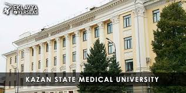
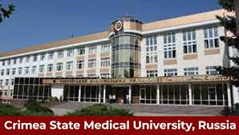
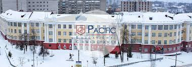
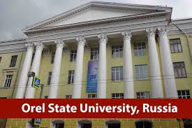

RUSSIA COLLEGES LIST

Kazan State Medical University is one of the most leading universities in Russia. This medical university is mainly well known for its core educational pedagogy. The intensive learning process, usage of modern medical equipment makes it different from others. This university located in the central part of Kazan city and facilitates with 65 medicine departments. This medical institution holds 3rd rank among the top 10 Russian medical universities. The students are offered global exposure that allows an influx of 6500 Indian students every year.The high FMGE passing percentage ensures the high quality educational standard of the students.

Established in 1944, Orenburg State Medical University (OrSMU) is one of the oldest, most regarded, and globally recognized medical universities in Russia. Situated in the Orenburg City of Russia, OrSMU is consistently placed in the list of top medical universities.

The Medical Academy named after S. I. Georgievsky of Vernadsky CFU is the institution of higher medical education situated in Simferopol. According to some independent estimations, it is one of the most prominent medical schools in Ukraine. The university has 6 faculties and 54 departments.

Pacific State Medical University, formerly known as VSMU is a university in Vladivostok in the Far East of Russia. At the beginning, since 1956 VSMU was the Medical Faculty of the Far Eastern State University, but in 2 years it became Vladivostok State Medical Institute.

Orel State University or Turgenev State University of Oryol, officially Orel State University named after I.S. Turgenev, formerly Oryol State Pedagogical Institute, is a university in Central Federal district of Russia in the city Oryol which is the Administrative centre of Oryol Oblast.